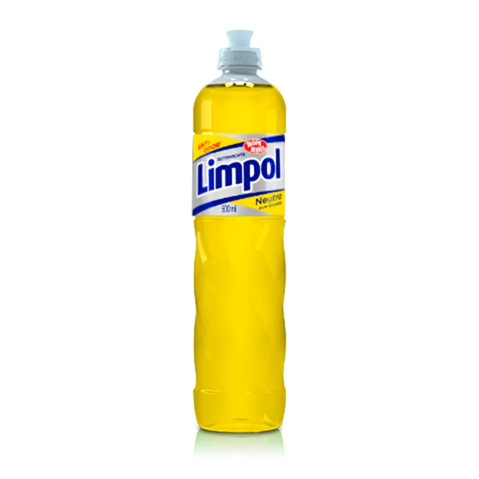
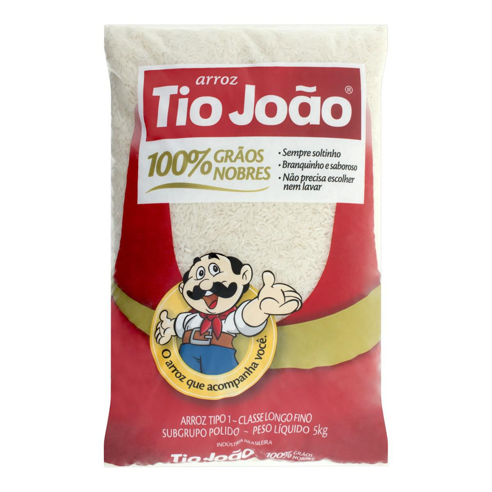

Mini Mercado Online
Home
Produtos
Serviços
Cadastro


Anterior
Próximo
Bem-vindo ao Mini Mercado Online
Aqui você encontra produtos de higiene, alimentos e frutas frescas, além de serviços personalizados.